Tsiolkovsky Rocket Equation
How much velocity change you can buy from a given engine and a given propellant load — the equation that makes spaceflight a logarithmic problem.

101 · zoom in
Konstantin Tsiolkovsky was a deaf Russian schoolteacher who thought about spaceflight in his spare time, decades before anyone could actually build a rocket. In 1903 he wrote down an equation that nobody could escape, and we still haven't. It says: the ∆v you can squeeze out of a rocket depends on two things — how good your engine is, and how much of your rocket is fuel. And the relationship is LOGARITHMIC.
The logarithm is the trap. If your rocket is half fuel, you get a certain ∆v. To double that ∆v, you don't make your rocket two-thirds fuel. You have to make it more like 87% fuel. To triple it, more like 95%. The numbers run away from you exponentially. This is why a Saturn V is a 110-metre tower that's almost entirely propellant — the spacecraft is a tiny capsule on top.
Two ways out. One: better engines (higher specific impulse) — that bumps the multiplier up so you get more ∆v from the same mass ratio. Two: staging — drop empty tanks as they empty so you're not lugging dead weight. Real rockets do both. Even then, single-shot missions cap out around 10-15 km/s of ∆v. Beyond that the equation says you need to refuel in orbit, or use exotic engines, or get help from a planet.
Konstantin Tsiolkovsky derived the rocket equation in 1903, decades before anyone built a rocket worth flying. The result has the inevitability of physics: ∆v depends on engine `Isp` and the ratio of starting mass to final mass — and it's logarithmic in that ratio.
The log is the cruel part. Doubling propellant doesn't double ∆v; it adds a constant chunk. Want to fly twice as far? You need an exponentially larger rocket. This is the tyranny of the rocket equation: chemical engines (`Isp` ~300-450s) hit a wall around 10-15 km/s of ∆v before the mass ratio becomes absurd. To go further you need higher `Isp` (ion engines, ~3000s) or staging (drop tanks as they empty), or both.
Saturn V: 7,800 tonnes wet, 600 tonnes dry. Mass ratio 13. Isp ~330s. ∆v ≈ 8.3 km/s — barely enough to reach trans-lunar injection. Falcon 9 reuse hits a different wall: every kilogram of recoverable hardware costs you proportional payload.
SEE IN THE APP
- /missions Each rocket's ∆v capability is computed from its Isp and propellant fraction